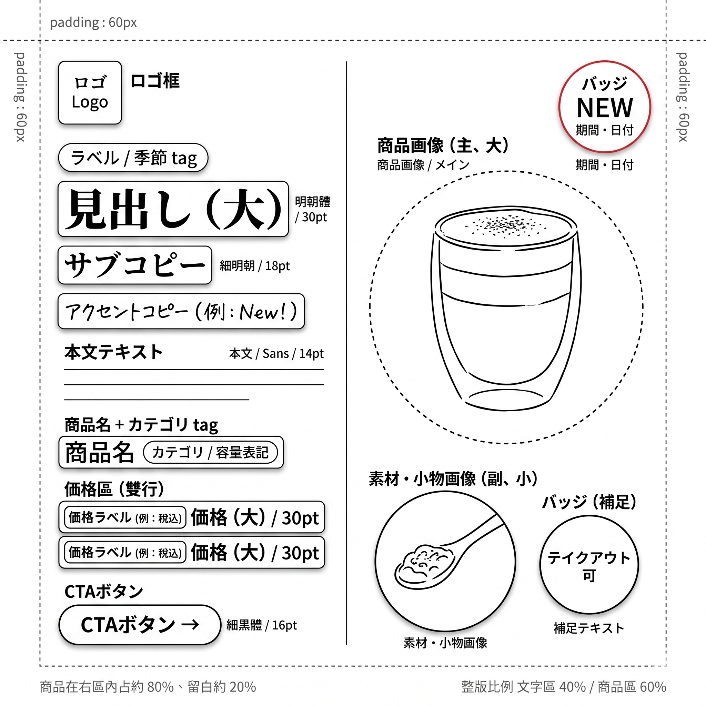

L2 視覺化線稿反推
把 L4 完稿脫掉表象、只留結構——指揮 AI 反推出可跨主題、跨季節、跨風格復用的 L2 骨架資產。時間：45 分鐘
看 — 直接 L4 → L4 vs 先轉 L2 中轉
開場情境（90 秒）
弄一下咖啡工作室老闆在 PRAC2 跑出了 3 張春季抹茶拿鐵的 IG 廣告（2 張日系、1 張美式復古）。
他現在想做夏季柚子美式的廣告——能不能直接把春季那張的 prompt 改一下、換主題就好？
理論上可以。但他之前這樣做過 5 次——每次 AI 都會把春季抹茶的綠色調、茶葉道具感、明朝體字感帶進夏季柚子裡，做出「像是抹茶拿鐵的柚子版本」，不是「屬於夏季柚子的獨立作品」。
原因在於：AI 拿到完稿當參考時，表象（色彩、字體、道具）會一起複製過來。要讓結構乾淨傳承、表象完全替換，中間必須多一個脫掉表象的中轉站——這就是 L2 視覺化線稿。
本單元教你如何指揮 AI 把 L4 完稿反推成 L2 線稿，變成可以跨主題、跨季節、跨風格復用的骨架資產。
對比實驗｜直接 L4 → L4 vs 先轉 L2 中轉（8 min）
拿你自己 PRAC2 的 L4 完稿做這兩組對照。觀察「直接改 prompt」vs「先轉 L2 再改」的差異。
打開自己 PRAC2 產出的 L4 完稿，同對話內對 AI 說：
剛才那張圖，幫我改成「夏季柚子美式」主題， 色調改冰冷、保持原本結構。
等 AI 產出新圖。觀察：
- AI 有沒有把原來春季的綠色調帶進來？
- 有沒有保留原來的商品形狀（例：同樣是拿鐵杯形狀）？
- 字體、徽章、道具風格有沒有改？
同對話內繼續對 AI 說（先不指定新主題、只轉線稿）：
把原本那張春季抹茶拿鐵的圖， 轉為灰階線稿：保留物件輪廓、移除所有色彩紋理、文字換日文佔位符 （見出し / サブコピー / 商品名 / CTA ボタン 等）。 風格像 Figma wireframe。
拿到 L2 線稿後再說：
以這張線稿為結構基礎，換成「夏季柚子美式」主題—— 保留版面結構、重新選擇夏季色調與夏季風格的道具。
觀察：
- 這次 AI 有沒有把春季綠色帶進來？
- 商品形狀有沒有按「美式」調整（例：高腳美式咖啡杯）？
- 版面結構（商品位置、主標位置、CTA 位置）是否保持？
參考｜L4 完稿 vs L2 線稿對照
下方是同 1 個商品的「L4 完稿」和「L2 反推線稿」對照——學員可看到「結構框架被抽出來、可繼承給其他商品」的具體樣貌。


本頁圖片為 AI 生成練習作品、用作教學示意、不可商用。
預期差異：AI 生圖每次不同，你跑出來的兩組對照跟同學不會一樣。但「直接 L4 → L4 會污染表象、經過 L2 會乾淨傳承」的規律會重現——這是 L2 的核心價值。
學 — L0-L4 五級 wireframe 分級表
本課所有「線稿」「骨架」「結構」都建立在這套分級上。先認清各級定義，後面的反推操作才有語言基礎。
| 等級 | 名稱 | 含什麼 | 用途 |
|---|---|---|---|
| L0 | 結構 JSON | 文字版 schema（elements / visual_hierarchy） | 最可重用、最乾淨；機器讀寫 |
| L1 | 空框 wireframe | 純幾何方框（無輪廓、無文字） | 極簡版結構圖，新手起步用 |
| L2 | 視覺化線稿 ← 本課核心 | 物件輪廓線稿 + 日文佔位符 + 灰階 | 本課主力中轉站，結構傳承用 |
| L3 | 低保真稿 | 灰階 + 1 重點色 + 基礎排版 | 提案 / 共識用 |
| L4 | 完稿 | 全彩 + 全元素 + 商用級 | 最終交付（M2 PRAC2 產出的那種） |
本課所有「線稿」「骨架」一律指 L2。L0 結構 JSON 也會在 l2-skeleton-library.md 看到，但本單元先專注 L2。
L0 太抽象（純文字）、學員不好想像；L1 太簡化（只有方框）、看不出物件形狀；L3 / L4 有色彩、會污染下游新情境。L2 剛好：保留物件輪廓讓你看得懂是什麼、但去除所有色彩紋理讓它可以跨情境復用。
學 — L2 反推 prompt 結構（完整版 + 堪用版）
以下是本課的 L2 反推 prompt 模板。依平台版本選用：
結構完整、輪廓精細度最高，建議進階版本使用。
壓縮至 7-8 行，免費版本可直接使用，效果略低但堪用。
請將剛才那張圖轉為 Level 2 視覺化 wireframe： 【必須保留】（結構層） - 商品主視覺的輪廓線稿（瓶 / 杯 / mockup 等物件形狀） - 徽章、按鈕、icon 的幾何形狀（圓形徽章、膠囊 CTA、矩形 tag） - 元素位置、大小比例、對齊關係 【必須移除】（表象層） - 所有色彩（全圖灰階、不含彩色強調） - 所有照片質感、紋理、反光、陰影 - 所有原始文字內容 【文字替換為日文佔位符】 - 主標 → 見出し（大） - 副標 → サブコピー - 本文 → 本文テキスト - 商品名 → 商品名 - 價格 → 価格（大） - CTA → CTA ボタン - 徽章 → バッジ / 割引・特典 / 期間・日付 - 特徵條列 → 特徴・効果 1 / 2 / 3 - App 元素 → アプリアイコン / アプリ名 / 読み仮名 【風格】 - 純黑線 + 白底 - 線條粗細一致（約 1-2px） - 像 Figma wireframe kit、不像 PPT 草稿、不像手繪塗鴉 【尺寸】與原圖一致
把剛才那張圖轉為 Level 2 灰階線稿 wireframe： - 保留商品輪廓、徽章圓形、按鈕形狀、元素位置 - 移除所有色彩、紋理、反光（全圖灰階） - 文字全換日文佔位符（見出し、サブコピー、商品名、CTAボタン 等） - 風格像 Figma wireframe，不是 PPT - 尺寸跟原圖一致
預期差異：同樣的 prompt 跑 3 次、每次的線稿粗細、輪廓精細度都會有差異。你要驗收的是「符合 6 項清單」而非「長得跟上次一樣」。這是 AI 特性，不是 bug。
| 版面元素 | 日文佔位符 | 說明 |
|---|---|---|
| 主標題 | 見出し（大） | 最大字階，視覺焦點 |
| 副標題 | サブコピー | 主標下方說明句 |
| 本文 / 條列說明 | 本文テキスト | 中段正文或特徵說明 |
| 商品名稱 | 商品名 | 商品名稱文字塊 |
| 價格 | 価格（大） | 價格數字，字階偏大 |
| CTA 按鈕 | CTA ボタン | 膠囊形按鈕文字 |
| 徽章 / 標籤 | バッジ / 割引・特典 / 期間・日付 | 圓形徽章或角標 |
| 特徵條列（3 項） | 特徴・効果 1 / 2 / 3 | 三項特徵條列 |
| App 圖示 / 名稱 | アプリアイコン / アプリ名 / 読み仮名 | App 類廣告專用 |
學 — 4 種常見失敗症狀與修正句
每種先看現象，再記修正 prompt 加強句——這些句子可以直接貼給 AI。
AI 回傳的「L2」還是彩色照片，只是加了一層線條。商品仍保留原照片的反光、陰影、質感；文字位置對，但底下的圖完全沒灰階化。
剛才的輸出仍保留原圖的色彩與照片質感，不符合 L2 規則。 請重新執行：絕對移除所有色彩（全灰階）、移除所有照片紋理 （商品改為純線稿外輪廓、不含陰影反光）。
L2 反推後，第一眼掃整張圖是否「只有黑白灰」——只要看到任何彩色殘留，立刻用症狀 1 修正句重跑。
L2 線稿的結構、色彩都對了，但文字位置仍是原始文案——例如主標位置仍寫「春季抹茶拿鐵」，沒換成「見出し（大）」。
剛才的輸出保留了原文字內容，不符合 L2 規則。 請將所有文字替換為日文佔位符：見出し（大）、サブコピー、 商品名、CTAボタン、価格（大）、バッジ。 不可保留任何原始文案。
檢查時特別看主標、商品名、價格三處——這三處最容易漏換。
L2 線稿的色彩對了、文字也換了佔位符——但商品位置跑到畫面中央（原本在左邊）、主標跑到商品右下（原本在商品右上）、整個版面結構偏離原 L4。
剛才的輸出結構偏離原圖。請以原圖為基準重新產出 L2： 商品在原本的位置（X 區域）、主標在原本的位置（Y 區域）、 徽章在原本的位置（Z 區域）——比例、對齊關係必須與原圖完全一致。
跑 L2 前先看 CH2-1 的 5 骨架速查表、確認你的 L4 屬於哪個骨架——反推出的 L2 應該仍是同一個骨架，若骨架變了就是走樣。
線稿粗糙、線條亂、像 Word 隨便畫的框。
剛才的輸出像 PPT 草稿、不像 Figma wireframe kit。 請重做：線條粗細一致（1-2px 黑線）、所有方框對齊整齊、 圓形膠囊形狀精準、純黑線白底風格。
學 — 驗收提問 B｜6 項結構清單
這是 PM 骨架驗收者角色的核心工具。不用自己眼睛看、把這 6 項丟給 AI 自己回答——比主觀感覺更客觀、更可重複。
| # | 檢核項目 | 驗收標準 |
|---|---|---|
| 1 | 輪廓清晰 | 商品 / 徽章 / 按鈕 / icon 的形狀，能從線稿看出是什麼物件？ |
| 2 | 色彩移除 | 全圖是否灰階、無任何彩色殘留？ |
| 3 | 佔位符正確 | 所有文字是否替換為指定日文佔位符、無原始文案殘留？ |
| 4 | 形狀一致 | 徽章（圓形）、CTA（膠囊形）、icon（幾何形）的形狀比例是否與原圖一致？ |
| 5 | 位置不變 | 商品 / 主標 / 徽章 / CTA 的位置是否與原圖對齊？ |
| 6 | 風格像 wireframe | 線條是否乾淨、像 Figma wireframe、不像 PPT 或手繪塗鴉？ |
請對剛才產出的 L2 線稿做自檢，逐項回答： 1. 輪廓清晰（能看出商品是什麼嗎？）：是 / 否 / 部分 2. 色彩移除（全圖灰階？）：是 / 否 / 部分 3. 佔位符正確（全換日文佔位符？）：是 / 否 / 部分 4. 形狀一致（徽章圓、CTA 膠囊等與原圖一致？）：是 / 否 / 部分 5. 位置不變（元素位置與原圖對齊？）：是 / 否 / 部分 6. 風格像 wireframe（不像 PPT 或塗鴉？）：是 / 否 / 部分 最後結論：6 項中有 __ 項通過。 若 5-6 項通過 = 此線稿可作為骨架資產繼承。 若 3-4 項通過 = 建議重跑或局部修正。 若 0-2 項通過 = 請指出哪些項不符，並重新產出。
預期差異：AI 的自檢結果可能跟你肉眼判斷不一致——以 AI 自檢為主要依據（較客觀、不被美感影響）。若 AI 判定通過但你看了覺得怪，再做人工複審。
做 — 跑自己 PRAC2 的 L4 完稿做 L2 反推 + 驗收
從你 PRAC2 產出的 2-3 張 L4 完稿中選一張（建議選結構最清楚的那張，不是最漂亮的）：
- 找到原 L4 的對話（Gemini / ChatGPT 對話記錄）——必須同對話接續
- 貼上 L2 反推 prompt 完整版（見上方「學」段落 Section 03）
- 等 AI 產出 L2 線稿（20-30 秒）
同對話內貼上驗收提問 B 的 6 項清單（見 Section 05），等 AI 回答。
觀察 AI 的自檢結果：
- 6 項中 AI 自己判斷通過幾項？
- 沒通過的項，AI 具體指出哪裡不符嗎？
- AI 的結論（繼承 / 迭代 / 重來）跟你肉眼判斷一致嗎？
若 AI 自檢顯示 5-6 項通過：這張 L2 線稿是可繼承的骨架資產，存檔進入階段 3。
若 AI 自檢顯示 3-4 項通過：用 4 種症狀的修正加強句迭代一次，重跑驗收 B。
把合格的 L2 線稿：
- 下載圖檔 → 命名為
{你的品牌}-{業種}-L2-骨架.png（例：HANAKO-手工皂-L2-骨架.png） - 記錄原對話 URL（Gemini / ChatGPT 對話連結）→ PRAC3 會用
- 記錄對應的原 L4（哪張 PRAC2 產出轉過來的）
- 記錄骨架代號（骨架 1-5 中哪一個，對照 CH2-1 速查表）
預期成果：1 張可繼承的 L2 骨架 + 完整檔案資訊——這是 M4 反控階段的核心資產。
- 用同對話方式跑出 L2 線稿（非新開對話猜圖）
- 丟驗收提問 B 讓 AI 自檢
- AI 自檢結果 ≥ 5/6 項通過（或用迭代句修到 5 項以上）
- 存檔命名規範：{品牌}-{業種}-L2-骨架.png
- 記錄原 L4 對話 URL（供 PRAC3 使用）
預期差異：你跑出的 L2 跟隔壁同學不會一樣——業種、原 L4、AI 運氣都不同。本練習不比誰的線稿最好看，比誰能穩定跑通「反推 + 驗收 + 存檔」的完整流程。下個單元 CH3-2 + PRAC3 會用這張 L2 做結構語言分析——存檔很重要、別丟。
常見錯誤 3 條
丟 L2 反推 prompt 後，AI 回傳的「L2」其實還是彩色照片——只是加了一層黑色線條在上面，商品仍保留原照片的反光、陰影、質感；文字位置對、但底下的圖完全沒灰階化。
Prompt 中「移除色彩」的指令太弱（AI 選擇性忽略）；或 AI 誤以為「保留輪廓」= 保留整張原圖；或同對話太長、AI 把原 L4 當作要「加工」而非「重新產出」。
剛才的輸出仍保留原圖的色彩與照片質感，不符合 L2 規則。 請重新執行：絕對移除所有色彩（全灰階）、 移除所有照片紋理（商品改為純線稿外輪廓、不含陰影反光）、 整張圖只有黑線 + 白底 + 極少量灰階填色（如有）。
L2 線稿的結構、色彩都對了，但文字位置仍是原始文案——例如主標位置仍寫「春季抹茶拿鐵」、沒換成「見出し（大）」。
Prompt 的「文字替換」指令沒列清楚要換什麼；或 AI 誤解「替換佔位符」= 加上佔位符文字而不是取代原文字；或 AI 覺得「原文字既然看得懂、就保留」。
剛才的輸出保留了原文字內容（例：「春季抹茶拿鐵」仍在主標位置）， 不符合 L2 規則。請將所有文字替換為日文佔位符： - 主標位置 → 見出し（大） - 副標位置 → サブコピー - 商品名位置 → 商品名 - 價格位置 → 価格（大） - CTA 位置 → CTA ボタン - 徽章位置 → バッジ （以及其他對應佔位符） 不可保留任何原始中文或英文文案。
L2 線稿的色彩對了、文字也換了佔位符——但商品位置跑到畫面中央（原本在左邊）、主標跑到商品右下（原本在商品右上）、整個版面結構偏離原 L4。
AI 在「轉線稿」的同時重新構圖（AI 覺得「你要線稿、我幫你排版更清楚」）；或原 L4 結構不清晰、AI 無法準確還原；或 Prompt 沒強調「位置、比例、對齊必須一致」。
剛才的輸出結構偏離原圖。請以原圖為基準重新產出 L2： - 商品在原本的位置（例：畫面左側 40% 範圍） - 主標在原本的位置（例：畫面右上） - 徽章在原本的位置（例：商品右上、圓形壓在商品上方） - CTA 在原本的位置（例：畫面右下、膠囊形） 比例、對齊關係、元素間距必須與原圖完全一致。 不可重新構圖、不可「優化」版面。
檢核題
請用自己的話說明：L0 / L1 / L2 / L3 / L4 這 5 級 wireframe 各自含什麼 + 差在哪裡？並說明為什麼 L2 是本課「生圖 → 轉線稿 → 反控」工作流的關鍵中轉站（而不是 L0、L1、L3）。
查看答案要點（至少命中 5 點算通過）
1. L0 結構 JSON：純文字 schema，最可重用、最乾淨、機器讀寫
2. L1 空框 wireframe：純幾何方框，無物件輪廓、無文字
3. L2 視覺化線稿：物件輪廓線稿 + 日文佔位符 + 全灰階，本課核心
4. L3 低保真稿：灰階 + 1 重點色 + 基礎排版
5. L4 完稿：全彩 + 全元素 + 商用級
6. L2 是關鍵中轉站的理由：L0 / L1 太抽象——看不到物件形狀；L3 / L4 有色彩——會污染下游新情境；L2 剛好：保留輪廓讓你看得懂是什麼 + 去除色彩讓它可以跨情境復用
加分項：本課所有「線稿」「骨架」一律指 L2（扣回術語一致性）
不及格：只列 5 級名稱沒說差異；「L2 比較好」（空泛）；「L2 是中間」（對但沒說為什麼不是 L0 / L1 / L3）
弄一下咖啡工作室老闆跑完 L2 反推、丟驗收提問 B 給 AI 自檢，AI 的回答如下：
1. 輪廓清晰：是 ✓
2. 色彩移除：否 ✗（商品杯子仍有淡淡綠色光影）
3. 佔位符正確：部分 ⚠（主標換了、但商品名位置仍寫「抹茶拿鐵」）
4. 形狀一致：是 ✓
5. 位置不變：是 ✓
6. 風格像 wireframe：是 ✓
結論：6 項中 4/6 通過，建議迭代或局部修正。
請說明你作為 PM 應該怎麼處理這張 L2？給出具體的迭代 prompt（不是「重畫」「再試試」）。
查看答案要點（至少命中 4 點算通過）
1. 判定：4/6 通過 < 5/6 門檻 → 需要迭代（不是直接收、也不是推翻重來）
2. 保留通過項：第 1/4/5/6 項都過、保留這些部分
3. 具體迭代 prompt：
剛才的 L2 驗收結果 4/6 通過。請保留 4 項通過的部分， 只修以下 2 項： - 第 2 項「色彩移除」未通過：商品杯子仍有淡淡綠色光影。 請將所有色彩徹底移除、全圖嚴格灰階、商品改為純黑線外輪廓。 - 第 3 項「佔位符正確」部分通過：商品名位置仍寫「抹茶拿鐵」。 請將商品名位置替換為「商品名」佔位符、不保留原文案。 其餘 4 項（輪廓、形狀、位置、風格）請保持不變。
4. 迭代後的下一步：再丟驗收提問 B 檢查一次（確認這次 ≥ 5/6 通過）
不及格：「再試一次」（沒具體指令）；「直接收了、反正只差 2 項」（違反 5/6 門檻）；「重畫」（沒保留通過項）